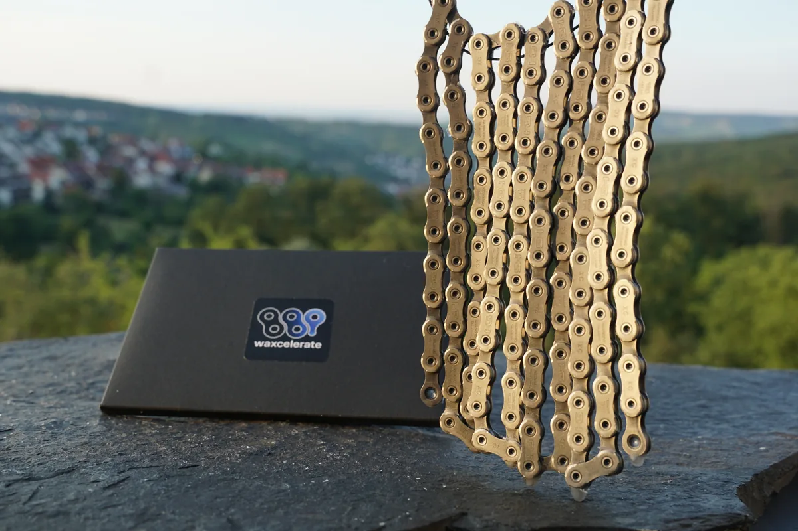
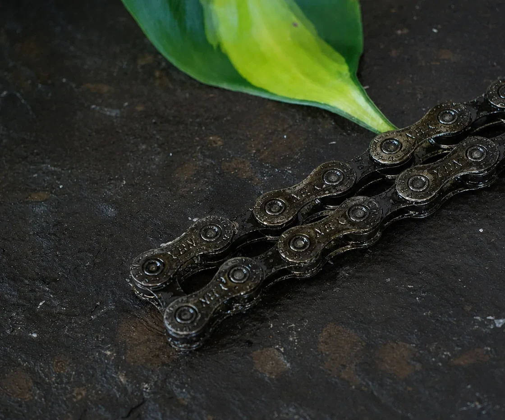
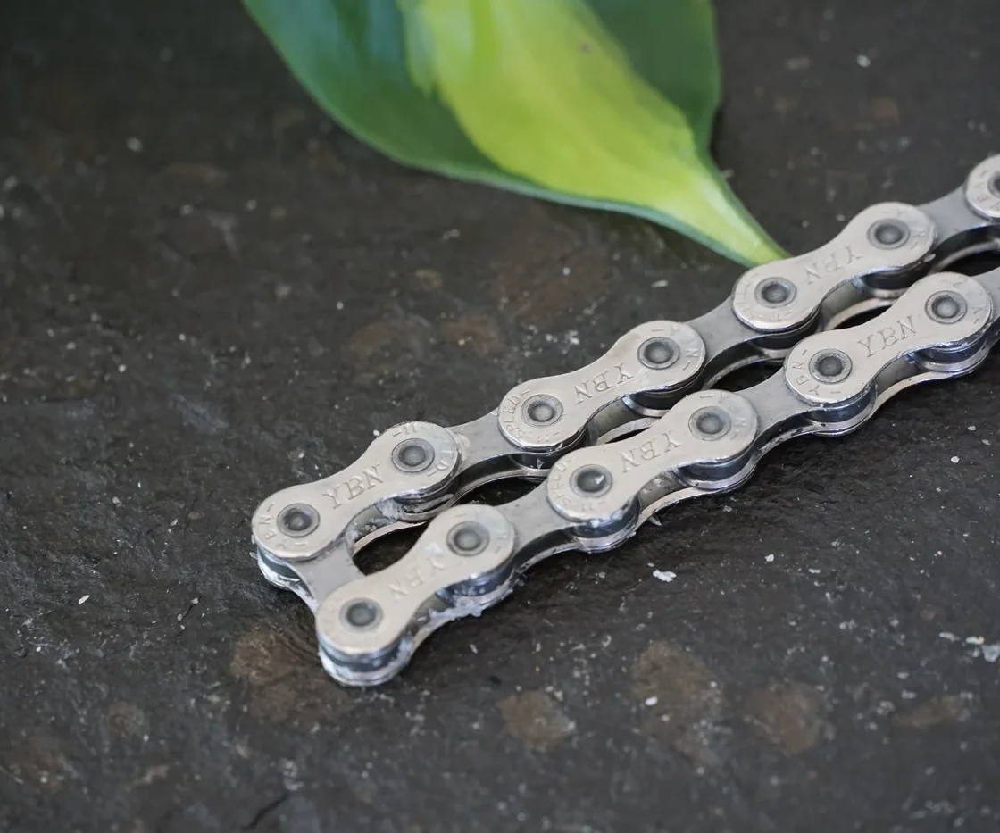
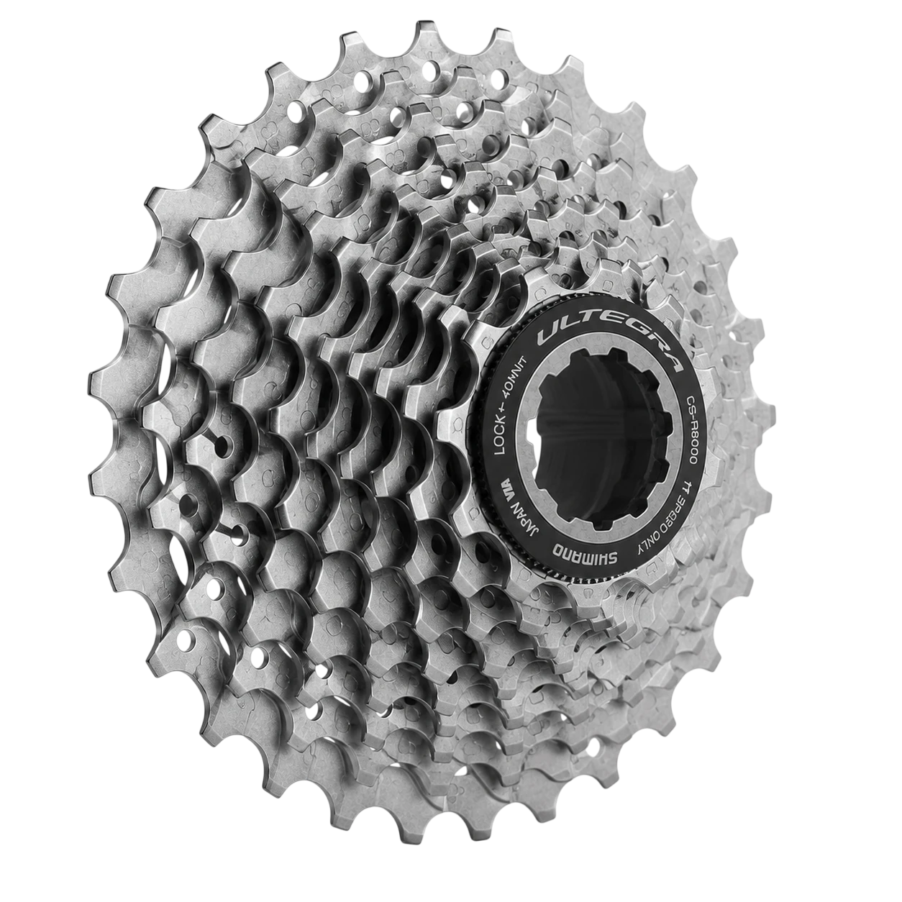

Wir übernehmen das Wachsen. Sie tauschen die Kette über den Tresen und kassieren Ihre Gebühr. Der Markt zahlt bereits für Wachs-Service. Nur eben nicht bei Ihnen. Das lässt sich in zwei Minuten pro Kunde ändern.
„Wie viele Minuten Werkstattzeit stecken bei Ihnen in einer gewachsten Kette?“
„Was machen Sie, wenn ein Kunde mit gewachster Kette zur Inspektion kommt?“
Regal. Wachs auf Kommission, 30 % Marge. Kein Einkauf, kein Warenrisiko.
Ketten. Vorgewachst und einbaufertig. Zwei Typen im Lager, der Rest in 48–72 h.
Kreislauf. Der Tausch über den Tresen. Wiederkehrend, zwei Minuten, Ihre Gebühr.
Und für Ihre Werkstatt: keine verölten Antriebe mehr entfetten. Gewachste Ketten kommen trocken rein und gehen trocken raus. Im Testpaket liegt ein Block gratis fürs Privatrad, zum Selbsttesten.
Vorbereitung pro Kette. Entfetten, trocknen, schmelzen, tauchen, aushärten. Im Frühjahr steht jede Kette im Wachstopf gegen einen Auftrag, den Sie abrechnen könnten.
Kette tauschen, fertig. Über den Tresen, ohne Werkzeug, ohne Aushärten. Kein Topf, kein Ultraschall, keine Wachsentsorgung, und im Peak keine Warteschlange.
Je Kette. Das nehmen Werkstätten und Versanddienste heute dafür. Wer keinen Anbieter vor Ort findet, schickt seine Kette per Post ein. An Ihrer Kasse vorbei.
Bis zu, inklusive Reinigung und Ersteinwachsen. Eine Woche Wartezeit für den Kunden, und der Umsatz landet woanders.
Referenzwerte aus veröffentlichten Preislisten und Prozessbeschreibungen deutscher Wachs-Werkstätten und Versanddienste, Stand 07/2026. Keine Preisempfehlung.
Rechenbeispiel mit einer angenommenen Tauschgebühr von 7,50 €. Ihre Gebühr und alle Endpreise bestimmen Sie selbst. Die Rewax-Kosten von unter 10 € je Kette trägt Ihr Kunde, er zahlt je Tausch also rund 15 bis 20 €.


Den Kundenkontakt. Den Endpreis. Die Marge. Die Tauschgebühr bei jedem Besuch. Ihre Kunden bleiben Ihre Kunden. Wir haben nie Kontakt zum Endkunden.
Reinigen und Wachsen. Gleiches Ergebnis bei jeder Kette. Nachschub in 48–72 h. Gewachst wird in Stuttgart und Leipzig.
Wachs auf Kommission. 30 % Kommission, rund 9 € je verkauftem Block. Bis 45 % im Direktkauf.
Fertig gewachst, einbaufertig. Sie lagern zwei Typen, den Rest liefern wir in 48–72 h.
Der Tausch über den Tresen. 5–10 € je Tausch, wiederkehrend. Siehe unten.
Kombinierbar. Die meisten Partner starten mit 01 und 03. Sie wachsen weiter selbst, so viel Sie wollen. Den Rest geben Sie ab.
Vier bis zehn Wachsgänge im Jahr, also vier bis zehn Besuche. Woanders steht das Rad dafür einen Tag in der Werkstatt oder eine Woche bei der Post. Bei Ihnen zwei Minuten. Aus einem Werkstattbesuch im Jahr werden sechs, jeder mit Beratung und Zubehör-Chance.

Eine verschlissene Kette frisst Kassette und Kettenblätter mit. Gewachst läuft eine Kette oft zwei bis drei Mal so lange. Für Ihren Kunden heißt das: er ersetzt seltener die teuren Teile. Für Sie: er kommt trotzdem öfter, nur eben zum Tausch statt zur Reparatur.
Kettenlängung. Die Prüfung und die Tauschentscheidung bleiben bei Ihnen.
Alle Endkundenpreise sind unverbindliche Preisempfehlungen. Ihre Preise bestimmen Sie.
Ultraschall-entfettet, mit Pro (MoS2) gewachst, versiegelt und einbaufertig. Quick-Link liegt bei.
| Modell | UVP |
|---|---|
| Shimano Dura-Ace / XTR CN-M9100, 12-fach | 69,95 € |
| Shimano XT / Ultegra CN-M8100, 12-fach | 54,95 € |
| Shimano SLX / 105 CN-M7100, 12-fach | 44,95 € |
| SRAM NX Eagle, 12-fach | 44,95 € |
| Shimano Deore XT CN-HG95, 10-fach | 44,95 € |
| Shimano Ultegra CN-HG701, 11-fach | 44,90 € |
| SRAM Force PC-1170, 11-fach | 39,95 € |
| Shimano XT / Ultegra CN-HG93, 9-fach | 39,95 € |
| YBN 11S, 11-fach | 34,95 € |
Bestseller · Handgewachst in Stuttgart · Wunschkette auf Anfrage · Sie lagern zwei Typen, den Rest liefern wir in 48–72 h.
Je Vorgang 400–550 km trocken. Wachs verdirbt nicht, also keine Saison-Abschreibung. Nur nicht in die Sommersonne ins Schaufenster legen.
Umsatz heute, Leistung später. Nicht eingelöste Stempel bleiben Ihre Marge. Wir liefern die Blanko-Karten kostenlos, co-brandbar mit Ihrem Logo.
Empfehlung, Sie setzen den Preis. Er liegt bewusst über unserem Versandpreis: Ihr Kunde verschickt nichts und wartet nicht.
Ihr Logo auf dem Etikett. Ab 10 Blöcken im Direktkauf, ohne Aufpreis.